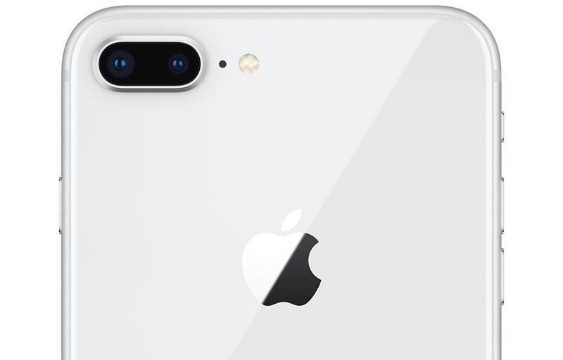
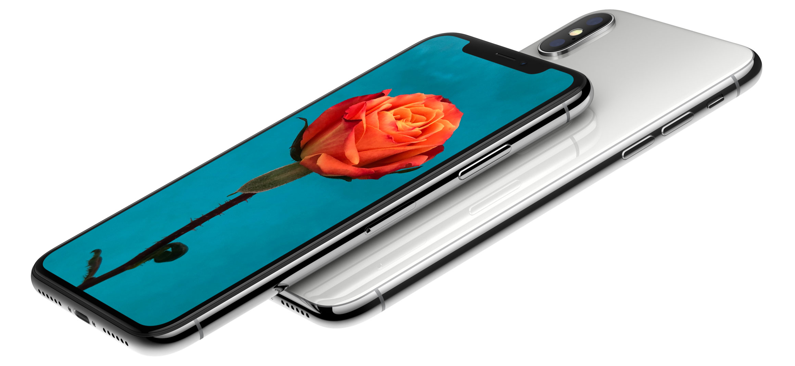
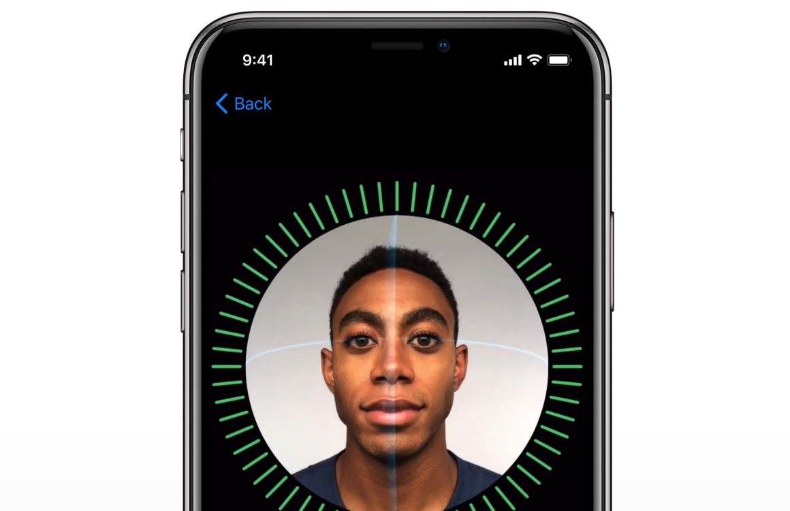

De iPhone 8 is een van de nieuwste producten van Apple. In de nieuwe smartphone zit een chip die de meest krachtige en slimme ooit is. De smartphone kan draadloos opgeladen worden en is helemaal van glas ontworpen. Bij de smartphone is zowel de voorkant als achterkant van glas. Ook is de nieuwe iPhone met precisie gemaakt om bestand te zijn tegen water en stof.
Prijs: Vanaf €809,-
De camera van de nieuwe iPhone is beter dan ooit.

iPhone 8 is voorzien van een geavanceerdere 12‑MP camera met een grotere en snellere sensor, een nieuw kleurenfilter, verbeterde pixel technologie en optische beeldstabilisatie voor foto’s en video’s.
iPhone X

Apple had als doel om een iPhone te maken die één en al scherm is. Een iPhone die zo intelligent is dat hij reageert op een tikje, je stem of zelfs je blik. Dat doel hebben ze bereikt.
De iPhone X is een nieuw product van Apple. Deze nieuwe iPhone bestaat uit één en al scherm. Er is geen Home button meer op de Iphone maar je gezicht is voortaaan je wachtwoord. Op de smartphone zit gezichtherkenning die ruim 30.000 punten in je gezicht nauwkeurig in kaart kan brengen.
Prijs: Vanaf €1159,-
Je gezicht in voortaan je wachtwoord.

De gedachte achter Face ID, een krachtige en veilige verificatiesysteem dat nog handiger is dan Touch ID. Ontgrendel met Face ID gaat snel, makkelijk en intuïtief. Met je Face ID ontgrendel je iPhone X alleen als je ernaar kijkt. Je kan hem dus niet voor de gek houden met foto's of maskers